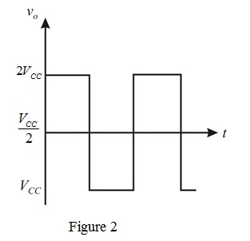
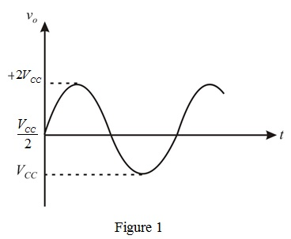
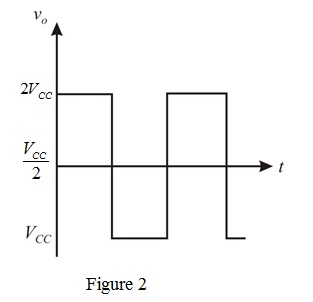

The corresponding square wave with swing from to  is shown in Figure 2.
is shown in Figure 2.

Refer to Figure 11.2 in the text book.
Neglecting , the output range is to .
The bias current is, .
Consider the sine wave form is shown in Figure 1.

The corresponding square wave with swing from to is shown in Figure 2.

Calculate the average power loss in transistor  .
.
Apply Kirchhoff’s voltage law at the output loop across  .
.
Write the equation for the average power loss.
Replace  for in equation.
for in equation.
Therefore, the average power loss in current-source transistor  is .
is .